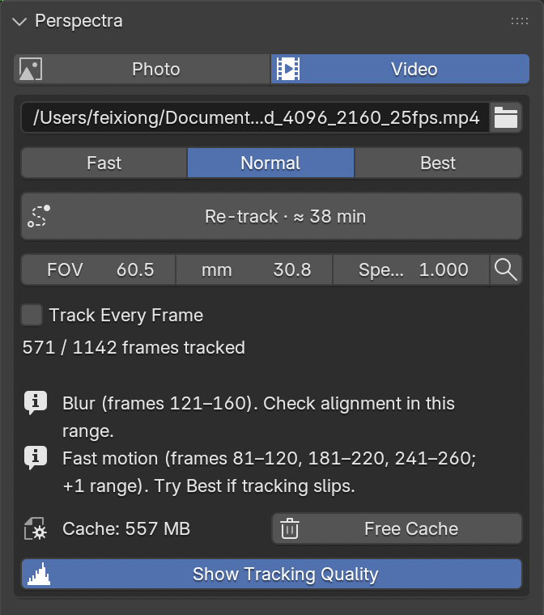
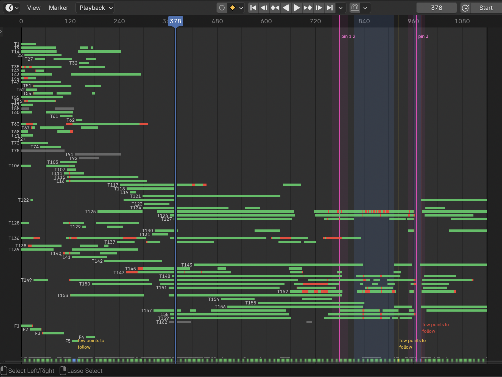
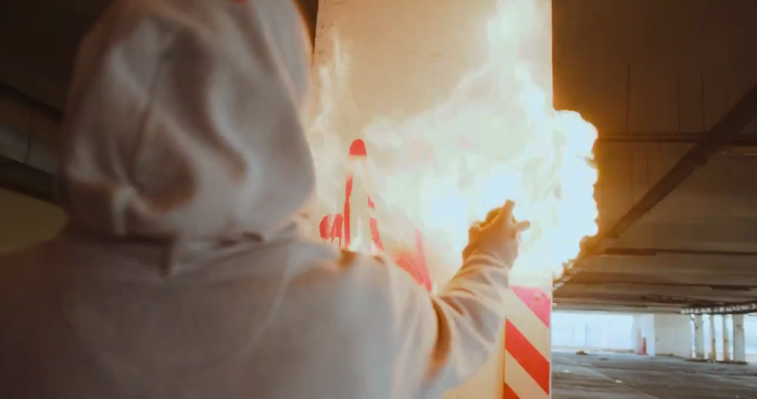
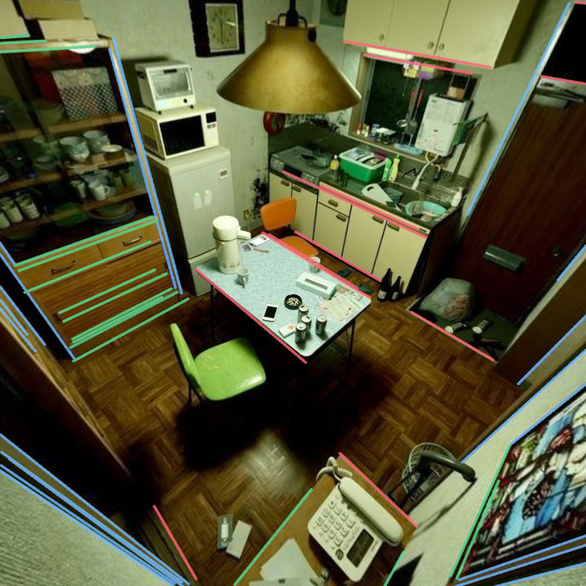
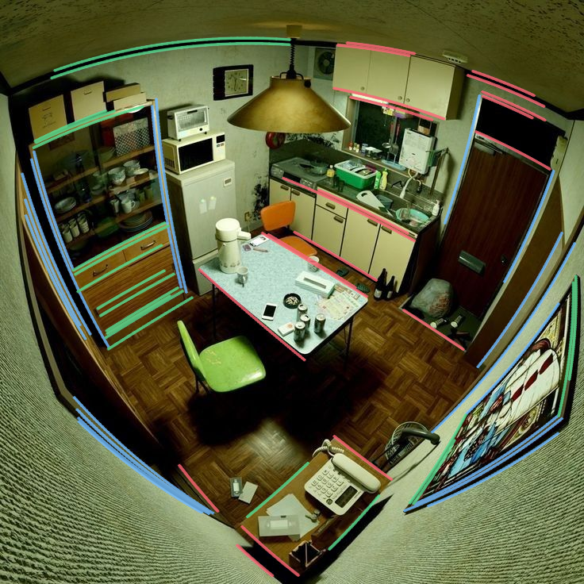

Not enough edges.
A doorframe or the edge of a table can help you match a photo’s perspective. Those clues are harder to use when they’re cut off or a wide lens makes them curve.
50% off every edition.
A smarter camera tracking for Blender
In one click, Perspectra estimates the lens, aligns the floor, and solves the camera move, even for fisheye.
Why Perspectra
When you want to add a 3D object to real footage, your Blender camera needs the same perspective and movement as the camera that filmed the shot. Perspectra recovers that camera and lets you refine any drift so your model stays planted as the shot moves.
A doorframe or the edge of a table can help you match a photo’s perspective. Those clues are harder to use when they’re cut off or a wide lens makes them curve.
Most trackers need the camera to move a lot. Zoom, empty walls, and cuts in an edit break them.
Perspectra uses AI to estimate lens distortion, gravity, and depth. Its camera-math solver fits a camera to tracked points and edges, checks how closely their projections line up with the footage, and filters out unreliable matches. That extra information helps when a wide lens bends straight lines or a plain wall offers few points to track.
Choose how much analysis your photo or video needs. Use a Fast mode for simple shots, or give Perspectra more time to analyze the lens and scene for more challenging shots.
Choose a clip to see the raw tracking result straight after clicking Track, with no manual adjustments. Camera View shows how the camera matches the original footage, while Overview lets you inspect its movement in 3D.
Place a test cube on a tracked point and press play. The ring marks that spot in the footage. Watch the cube’s corner. If it slips away from the ring, you’ve found a drift.

Loading tracking result…
Already use another tracker? Try the original footage in it and compare how steadily a cube holds on the same spot.
Select your video and click Track. Perspectra handles the analysis automatically, without manually selecting points or setting up camera type. It checks the results and tries to fix weak tracking before you review the final result.
The scooter hide part of the street. Perspectra ignores moving objects and picks up the same details once they're visible again. The colored IDs show which points are tracked across the shot.
Perspectra recognizes the same details on the forest as the camera moves through the scene. Red dots show the original tracked positions, while green rings show the corrected ones. The arrows highlight how drifting points are brought back into place, helping keep the camera track stable throughout the shot.
Perspectra smooths both camera position and rotation while keeping the movement aligned with tracked points across the scene. This reduces jitter without losing the original camera motion, giving you a steadier, more accurate track.
Fast zooming can make tracking points disappear or become difficult to recognize, causing the camera track to drift. Perspectra finds and matches those points again as the zoom changes, helping keep the camera aligned with the scene.
Select any object in your footage, and Perspectra automatically creates a mask that follows it throughout the clip, adapting to changes in its position, rotation, and shape. You can refine the mask manually whenever needed.
When the camera moves inside a moving vehicle, Perspectra tracks both motions independently. You can view the camera's movement relative to the vehicle or switch to world space to see how both movements combine.

Traditional trackers struggle with little parallax or only a few points to track. Perspectra uses an additional image-processing pass to analyze the entire frame, finding visual clues that help estimate the camera even when movement and trackable details are limited.

Try this clip in your own tracker and compare how well the points stay on the tabletop objects.
Open Show Tracking Quality to see where the camera track holds up. The panel flags ranges with blur or fast motion. Select a frame on the color-coded timeline to inspect individual tracks and decide where to make a correction.


No fixed clip-length limit. Perspectra can track entire videos, even those with cuts between shots, or just a selected frame range. Long videos are processed in smaller sections to keep memory usage manageable.
Wide-angle and fisheye lenses bend straight lines and distort perspective, making traditional camera tracking difficult. Perspectra accounts for lens distortion during analysis, helping recover accurate camera movement even from heavily distorted footage.
Choose the floor level, set the scene scale, and adjust the clip's playback speed. If you already know the camera's lens settings, you can override the estimated values for a more accurate match.
Use the tracking health bar to spot problems and jump straight to the frames that need attention. If the automatic tracking misses important details or follows a moving object, you can add your own reference points to help correct the camera solve.

This camera track was refined using all three tools below: additional tracking points, edges, and surfaces. Switch to Overview to compare the original camera path in teal with the corrected path in orange and see how the adjustments improved the result.
Select a recognizable detail, like a corner or bolt, and track it across the footage. Perspectra uses these extra points to refine the camera solve and correct areas where automatic tracking struggles.
Mark visible edges, such as corners, pillars, or door frames, to give Perspectra additional references. These edges help refine the camera's perspective, even when individual tracking points are hard to follow.
Select a flat surface, such as a floor, wall, or tabletop, to give Perspectra an additional reference for its position and orientation. This helps refine the camera solve and keep the scene geometry aligned with the footage.
When objects, smoke, or other obstacles hide important tracking points, Perspectra uses camera movement before and after the affected frames, along with any remaining visible references, to reconstruct the missing camera motion and reduce drift.

Select a person in your footage, and Perspectra generates an animated, editable skeleton matched to their movements and the camera perspective. Refine the poses directly in Blender. Fine details like finger and toe movements may still need manual adjustments.

When a limb moves out of frame or behind an object, Perspectra uses a hybrid approach based on MotionBricks to estimate the missing movement from visible poses. You can review and adjust the results directly in Blender. This feature is still in development, and we're working to improve its accuracy and stability.
Drag the skeleton's joints over the footage to correct the pose. Perspectra respects human joint limits to keep the movement natural and blends your adjustments into the surrounding animation frames.
When a foot should stay planted but slides across the floor, adjust its position directly over the footage. Perspectra uses the correction to keep the foot in place during contact with the ground, helping the animation look more natural.
Transfer captured motion to your own character's skeleton, or use one of the ready-to-use ANNY or Mixamo rigs. Perspectra lets you map bones between different skeletons and retarget the animation directly in Blender.
Click on an object in your photo or video, and Perspectra identifies its shape and creates a matching 3D primitive or reconstructs a detailed mesh with textures. For videos, it can also track the selected object throughout the clip. Use the generated geometry to place your own 3D models accurately, create realistic shadows, and handle occlusion.

Reconstruct detailed 3D meshes from photos or videos, using multiple views to recover the object's shape and textures. Turn everyday footage into useful 3D assets you can edit and use directly in Blender.
Collect usable outlines and scene evidence across the clip.
Perspectra uses a raised detail visible from several angles, such as the mandarin stem, to refine the mesh and align the texture around it.
Unseen surfaces, thin parts, and reflections can leave incomplete or approximate geometry.
Recover a camera from one image using lens, gravity, scene-edge, and depth estimates. The same photo-matching methods also analyse selected video frames to help estimate and refine the video camera’s lens and orientation.
Choose Set Floor and click the surface your model should rest on. Pick the tabletop for a product shot or the pavement for a street scene. Perspectra sets that height to zero in Blender. Place a Test Cube to check where the model will sit.
In a photo or video, choose Scale from a Known Size, mark both ends of a measured feature, and enter its real length. In video, Scale from a Person also lets you set a reference figure’s height and adjust the scene scale until it lines up with someone in the shot.
Straight perspective guides don't work with fisheye images because the lens bends the lines. Perspectra accounts for this distortion and curves its guides to match the footage, helping recover the correct camera position, orientation, and lens settings.


OriginalCorrectedSelect your model in Blender’s matched camera view and choose Fit Mesh to Image. Drag a pin from a mesh corner or edge onto the same detail in the photo. As you place pins, Perspectra adjusts the model’s position, size, and heading. Press Enter to keep the fit or Esc to restore the original placement.
Select any person in a photo, and Perspectra estimates their body pose and generates a matching 3D skeleton. You can inspect and adjust the pose directly in Blender.
Stage products, set extensions, shadows, and reflections through the matched camera.
Use reconstructed objects and people for blocking, occlusion, and animation reference.
Render depth, normals, or pose references in Blender for your wider AI-video workflow.
Start with photo camera matching in Lite. Standard adds video tracking, repair, and photo primitives. Pro adds photo meshes and posed skeletons, human motion, and 3D reconstruction.
Regular price $14Launch-week price $7one-time purchase · 50% off
Get a camera and scene from a single image.
Regular price $28Launch-week price $14one-time purchase · 50% off
Match video. Repair the track. Fit photo primitives.
Regular price $50Launch-week price $25one-time purchase · 50% off
Bring motion and geometry into the matched scene.
Launch prices apply until Fri, 27 Nov. Free 1.x updates included. Upgrade later by paying the difference between editions. Prices in USD.
| Workflow | Lite | Standard | Pro |
|---|---|---|---|
| Photo camera matching | |||
| Photo camera matching and lens estimation | Included | Included | Included |
| Lens distortion correction and manual guides | Included | Included | Included |
| Floor alignment and known-size scale | Included | Included | Included |
| Video camera tracking and repair | |||
| Video camera tracking in Fast, Normal and Best | — | Included | Included |
| Point, edge, surface and block track repair | — | Included | Included |
| Bridge missing frames and smooth camera jitter | — | Included | Included |
| Human pose and motion | |||
| Trace a human pose from a photo | — | — | Beta |
| Capture and edit human motion from video | — | — | Beta |
| Fill hidden motion | — | — | Beta |
| Track fingers and toes | — | — | Beta |
| Retarget captured motion to a compatible FK rig | — | — | Included |
| Object tracking and primitive fitting | |||
| Fit boxes, cylinders and planes to photos | — | Included | Included |
| Reconstruct moving objects from video | — | — | Included |
| Mesh reconstruction and textured scans | |||
| Reconstruct meshes from photos | — | — | Included |
| Create textured scans from video | — | — | Included |
These upcoming features are exclusive to Perspectra Pro.
Expand the beta finger and toe tracks into full articulation and add facial performance capture.
Recover a lighting setup from a photo or clip and export an HDRI so inserted CG picks up the direction and color of the light in the shot.
Extend experimental motion completion to longer stretches when part of a performer moves outside the frame.
Compare Lite, Standard, and Pro side by side. Pro combines automatic photo and video camera matching, hands-on tracking repair, human motion, and 3D reconstruction in one Blender workflow.
| Workflow | Perspectra One-time purchase · launch week −50% | Paid alternatives | ||||||
|---|---|---|---|---|---|---|---|---|
| LiteRegular price |
StandardRegular price |
ProRegular price |
Perspective Plotter ↗$18 | Camera Tracker 7 ↗$35 | GeoTracker ↗$19.99/mo | MotionGen Pro ↗$29 | BlendCap ↗$60 | |
| Operating systems | Windows, macOS, Linux | OS unspecified | Windows, macOS, Linux | Windows, macOS, Linux | Windows 10/11 | Windows 10/11, Linux | ||
| Blender versions | 4.2+ | 3.0–5.2 | 5.1–5.3 | 2.80–5.3 | 3.6–5.2 | 4.2+ | ||
| Photo | ||||||||
| Photo camera matching | IncludedAuto + Manual | IncludedAuto + Manual | IncludedAuto + Manual | IncludedManual | Not included in this workflow | IncludedManual | Not included in this workflow | Not included in this workflow |
| Lens-distortion correction | IncludedAuto + Manual | IncludedAuto + Manual | IncludedAuto + Manual | Not included in this workflow | Not included in this workflow | Not included in this workflow | Not included in this workflow | Not included in this workflow |
| Photo floor + scale | IncludedAuto + Manual | IncludedAuto + Manual | IncludedAuto + Manual | IncludedManual | Not included in this workflow | IncludedManual | Not included in this workflow | Not included in this workflow |
| Manual photo guides | Included | Included | Included | Included | Not included in this workflow | Not included in this workflow | Not included in this workflow | Not included in this workflow |
| Photo primitives | Not included in this workflow | IncludedAuto + Manual | IncludedAuto + Manual | Not included in this workflow | Not included in this workflow | Not included in this workflow | Not included in this workflow | Not included in this workflow |
| Photo meshes + posed skeletons | Not included in this workflow | Not included in this workflow | IncludedAuto + Manual | Not included in this workflow | Not included in this workflow | Not included in this workflow | Not included in this workflow | Not included in this workflow |
| Video camera | ||||||||
| Video camera tracking | Not included in this workflow | IncludedAuto + Manual | IncludedAuto + Manual | Not included in this workflow | IncludedAuto + Manual | IncludedAuto + Manual | Planned | Not included in this workflow |
| Tripod / zoom tracking | Not included in this workflow | IncludedAuto + Manual | IncludedAuto + Manual | Not included in this workflow | IncludedAuto + Manual | IncludedAuto + Manual | Not included in this workflow | Not included in this workflow |
| Manual video repair | Not included in this workflow | Included | Included | Not included in this workflow | IncludedLimited | IncludedLimited | Not included in this workflow | Not included in this workflow |
| Video floor + scale | Not included in this workflow | IncludedAuto + Manual | IncludedAuto + Manual | Not included in this workflow | IncludedAuto + Manual | IncludedManual | Not included in this workflow | Not included in this workflow |
| Scene + people + reconstruction | ||||||||
| Video body motion | Not included in this workflow | Not included in this workflow | IncludedAuto + Manual | Not included in this workflow | Not included in this workflow | Not included in this workflow | IncludedAuto | IncludedAuto + Manual |
| Video geometry reconstruction | Not included in this workflow | Not included in this workflow | IncludedAuto + Manual | Not included in this workflow | Not included in this workflow | Not included in this workflow | Not included in this workflow | Not included in this workflow |
| Facial performance capture | Not included in this workflow | Not included in this workflow | Planned | Not included in this workflow | Not included in this workflow | Not included in this workflow | Not included in this workflow | IncludedAuto + Manual |
| Finger and toe tracking | Not included in this workflow | Not included in this workflow | Beta | Not included in this workflow | Not included in this workflow | Not included in this workflow | Not included in this workflow | Finger trackingFingers |
| Character retargeting | Not included in this workflow | Not included in this workflow | ✓ Included | Not included in this workflow | Not included in this workflow | Not included in this workflow | IncludedAuto | IncludedAuto + Manual |
✓ Included · — Not included in this workflow · Auto automatic processing · Manual user-set guides or geometry · Auto + Manual automatic processing with manual setup or editing. Planned features are not included yet.
Floor + scale: Perspectra estimates both from the image or clip; you can refine the floor and calibrate scale to a known size. Perspective Plotter uses manually placed guides and a reference distance. GeoTracker takes the scene reference from your supplied geometry.
GeoTracker: its “model” is a 3D mesh you supply, not an AI model. You place pins to align it, then it can solve the camera and track automatically. Zoom is solved automatically after setup. It tracks existing geometry rather than reconstructing a new mesh. Workflow details ↗
Camera Tracker 7: choose Normal, Tripod, or 360° and enable Zoom when needed; tracking then runs automatically. It attempts automatic ground alignment, with Ground and Scale tools for manual calibration. Includes an editable mask system, automatic actor masks, and dense point-cloud reconstruction. Actor masks exclude people from camera tracking; they do not generate body animation. Settings ↗ · Editing tools ↗
Manual repair: Perspectra includes points, edges, surfaces, local refinement, bridges, and block matching. Camera Tracker 7 includes Align, Point, Smooth, Defunk, and mask editing; GeoTracker offers pins and masks.
Perspectra automatically estimates the camera's lens, perspective, and scene depth, even with wide-angle distortion. Fine-tune the result using manual guides when needed, then start placing your 3D objects into the photo.
Unlike traditional tools such as Perspective Plotter ($18), Lite gives you an automatic starting point without requiring you to set up perspective guides from scratch.
Standard includes everything in Lite, plus automatic video camera tracking, tools to fix tracking errors, and the ability to create 3D primitives from photos. Refine difficult shots using additional points, edges, surfaces, and local corrections.
Perspective Plotter ($18) and Camera Tracker 7 ($35) cover image and video tracking for $53 together. Standard combines both workflows, with extra tools for scene setup and tracking refinement.
Pro includes everything in Lite and Standard, plus 3D mesh reconstruction, human pose and motion tracking, and the ability to reconstruct objects from photos and videos. Match cameras, fix difficult tracks, and bring people and objects into your Blender scene without switching between add-ons.
Buying similar tools separately—Perspective Plotter ($18), Camera Tracker 7 ($35), and MotionGen Pro ($29)—would cost $82, with GeoTracker adding another $19.99 per month for object tracking. Perspectra Pro brings these workflows together for just $50, paid once, with free updates.
Workflow details reviewed 23 November 2026 against product documentation. Availability refers to the named workflow in each add-on, not features supplied by a separate tool. These are feature comparisons, not measured accuracy rankings. Prices and release terms may change.
Tracking and reconstruction run locally. Download the models you need, then work with your footage without uploading it to a processing service.
Core workflows support CPU processing, with supported GPUs used where available. Optional refinement tools have additional GPU and Python requirements. Model sizes and license details are listed in Preferences.
Storage estimates cover the current model catalog across Fast, Normal, and Best. Standard includes the supported GPU tracking models; Pro also includes the optional human-refinement models. Shared files are counted once. Runtime packages, Blender, source footage, and project caches are additional; actual downloads vary by system and selected features.
The add-on targets Blender 4.2+ on Windows, macOS, and Linux. Confirm the release’s tested Blender and operating-system versions before purchase; optional acceleration varies by system.
No. Blur, occlusion, repeated textures, reflections, cuts, and moving subjects can reduce the available evidence. Start with the automatic solve, inspect it, then use the repair controls for difficult ranges. The examples let you judge the result directly.
No. They are video-processing presets available in both Standard and Pro. More processing does not guarantee a better result for every shot. Choose the mode that suits your footage, then inspect and refine the track. The gallery shows one selected result for each available clip.
Yes. You can use Perspectra for paid client work and other commercial projects. The models and weights offered by the current installer permit commercial use. You can find each model’s license in the add-on preferences.
Standard includes primitive fitting from photos. Photo mesh reconstruction and posed skeletons require Pro. Pro also adds human animation and object reconstruction from video, including textured scans.
Automatic depth provides an estimate. Calibrate with an object or distance of known size when real dimensions matter, and check the floor alignment.
Yes. The output is a Blender scene with an editable camera and, for supported reconstruction workflows, geometry and animation. Human poses can be edited and corrections blended into nearby frames. Pro can retarget the performance onto a compatible character rig with editable bone mapping.

Paint with light directly on your scene — every stroke lands in the viewport in real time. Your lights become fully editable creative tools with layers, blend modes, and non-destructive control. Intuitive, expressive, fun.
Explore Light Painter
Tired of endlessly re-plugging nodes into the material output just to check their effect? ShaderView shows real-time output previews directly above each node, including histograms, heatmaps, reveal the actual values flowing through your material. Faster, more efficient, more intuitive.
Explore ShaderView